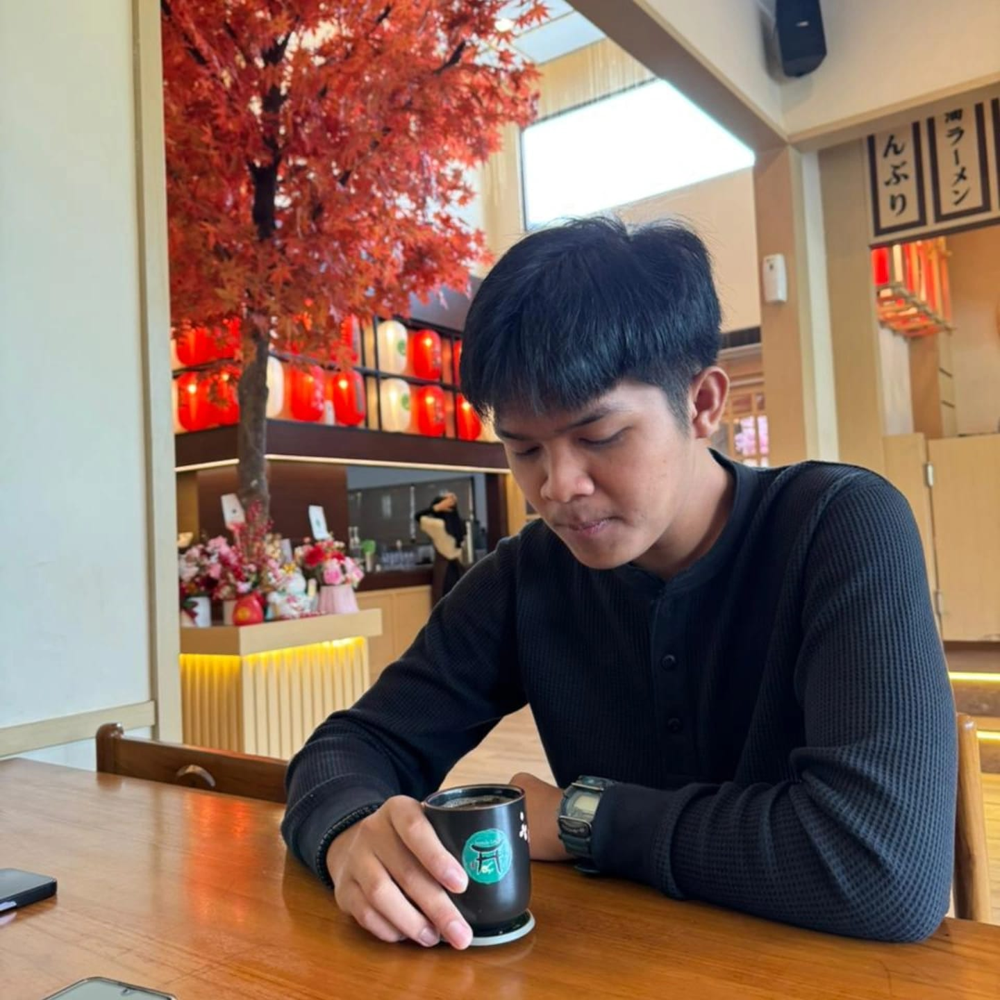

Biodata Mahasiswa
Muhammad Fadel Fadawa
Teknik Informatika, Universitas Maritim Raja Ali Haji
2501020149
Tentang Saya
Saya hanyalah seorang pelajar dengan rasa ingin tahu yang tinggi, sebuah laptop, dan segudang ide. Saya senang mengeksplorasi teknologi, desain, dan segala hal yang memungkinkan saya menciptakan sesuatu yang orisinal.
Saat tidak sibuk dengan urusan kuliah, saya senang bermain bola basket dan menghabiskan waktu melakukan hal-hal yang saya sukai. Bola basket telah menjadi salah satu cara favorit saya untuk bersenang-senang, tetap aktif, dan menyegarkan diri. Untuk masa depan, saya bercita-cita menjadi seorang AI Engineer dan mengeksplorasi bagaimana teknologi serta kecerdasan buatan dapat mewujudkan ide menjadi sesuatu yang nyata dan bermanfaat.
Gallery

